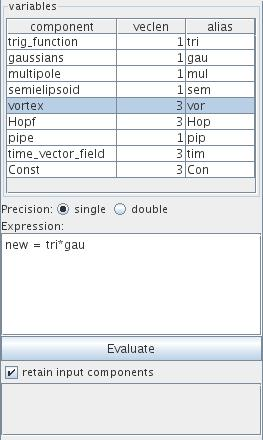

COMPONENT CALCULATOR
The component calculator module performs mathematical operations on field components.
Input data
At input there is a field.
Output data
At output there is a field.
Computation parameters

The table in the user interface contains all names of input components, the component length and a proposition of a short alias. Double click on the alias gives the possibility to change it.
A radio button menu defines the precision of calculation as single or double.
The expression text field offers the possibility to define new components performing basic calculations:
There is the possibility to use:
Operations should fit into one single line, otherwise they should broken up into several operations in several lines.
Calculations are carried out pressing the Evaluate button.
By default the retain input components check box is on, i.e. all input components are passed over to output.
Syntax errors in the expression text field are signalized by an error message.